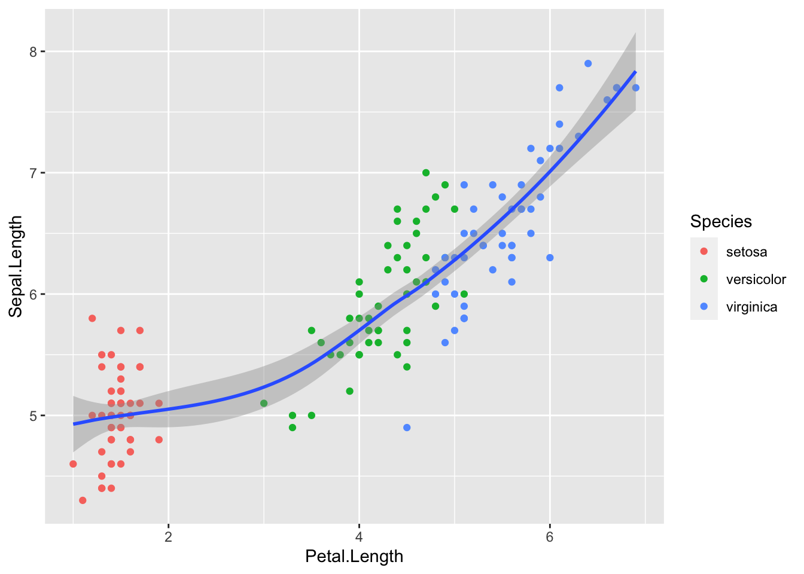

rm(list = ls())
# no packages to load since we're talking about Base R!rbasics
Some tools we’ll meet
- Facts & extensions from the reading
Create vectors using
c(),:,seq(),rep().Select vector elements using the square brackets
[ ](have you done this before?).Program using
forloop,whileloop,ifstatements,
Write an original
function(where have you done this before?)Subsetting with
[(especially for vectors & data frames)Subsetting with
$(especially for data frames & lists)Subsetting with
[[(especially for lists)read.csvfor reading datasetsdplyrggplot2ggPlotThemes
- RStudio Cheat Sheet (on Canvas)
- Nested loops (e.g., data frame indices)
- Extracting elements from arbitrary objects (e.g. a regression model object)
- Programming a simulation with & without loops
Goals for today?
in your adventures with R programming you’ll often encounter code written in base R, so we’ll meet some common syntax.
introduce loops as an intuitive approach to iterative tasks
meet the basic syntax to write your very own R functions
program a simulation study to better understand a counter-intuitive concept
e.g., Confidence interval statements:
“We are 95% confident that the average amount of carbon stored in each square kilometer of tropical forest is between 9,600 and 13,600 tons”
95% CI: 11,600 ± 2⋅1000 = (9,600, 13,600)
What’s wrong with saying “there’s a 95% chance that the average amount of carbon stored in each square kilometer of tropical forest is between 9,600 and 13,600 tons” ??
Creating vectors
c( ) is most common by far
grade <- c(2, 5, NA, 5)
grade [1] 2 5 NA 5mean(grade)[1] NA# we need argument `na.rm = TRUE
mean(grade, na.rm = TRUE)[1] 4Shortcut using : for numbers in sequence
2:6[1] 2 3 4 5 6twoThruSix <- 2:6
twoThruSix[1] 2 3 4 5 6Sequences using seq( )
seq(2, 5, by = 0.2) [1] 2.0 2.2 2.4 2.6 2.8 3.0 3.2 3.4 3.6 3.8 4.0 4.2 4.4 4.6 4.8 5.0Repeating a sequence using rep( )
rep(c("A", "B", "C"), times = 3)[1] "A" "B" "C" "A" "B" "C" "A" "B" "C"Selecting vector elements with square brackets
# create a vector
x <- c("A", "B", "C", 1, 2, 3)
x[1] "A" "B" "C" "1" "2" "3"Select only element 4
x[4][1] "1"Select elements 2 thru 4
x[2:4][1] "B" "C" "1"Select elements 1 and 5
x[c(1, 5)][1] "A" "2"Excluding Vector Elements with square brackets
# create a vector
x <- c("A", "B", "C", 1, 2, 3)
x[1] "A" "B" "C" "1" "2" "3"Select all elements except element 4
x[-4][1] "A" "B" "C" "2" "3"Select all elements except elements 1, 4, and 6
x[-c(1, 4, 6)][1] "B" "C" "2"Selecting Vector Elements that match a Condition
# create a vector of numbers
y <- c(1, -1, 6, -2, 6, 5, 9, 1, 10, 10)
y [1] 1 -1 6 -2 6 5 9 1 10 10Select elements equal to 10
y[y == 10][1] 10 10Select elements less than zero
y[y < 0][1] -1 -2Select elements in the set {1, 2, 5}
y[y %in% c(1, 2, 5)][1] 1 5 1Programming with for Loops
Basic for Loop Syntax:
for (index in sequence) {
do something
} Here’s a for loop that will “do something” for each number from 1 to 4
for (i in 1:4) {
j <- i + 10 # add 10 to the "current" value of `i` in each step of the loop
print(j) # print the result of `j` for each step of the loop
}[1] 11
[1] 12
[1] 13
[1] 14This is often used to iterate over each value in a vector where x[i] refers to element i of the vector x
byFives <- seq(10, 37, by = 5) # vector counts by 5
byFives [1] 10 15 20 25 30 35for (i in 1:length(byFives)) { # `length(byFives)` is the number of elements in the `byFives` vector
j <- byFives[i] / 3 # divide element `i` of the `fives` vector by 3 in each step of the loop
print(j) # print the result of `j` for each step of the loop
}[1] 3.333333
[1] 5
[1] 6.666667
[1] 8.333333
[1] 10
[1] 11.66667Programming with while Loops
Basic while Loop Syntax:
while (true condition){
do something
}Here’s a while loop that prints the index i while it is less than 5:
i <- 1 # initialize our index variable
while (i < 5) { # set the condition of the `while` loop
print(i) # print the value of `i` in each step of the loop
i <- i + 1 # increment `i` for the next trip through the loop
}[1] 1
[1] 2
[1] 3
[1] 4Programming with functions (that you build yourself!)
Basic function Syntax:
function_name <- function(arg1) {
do something
return(new_object)
}Here’s a function that takes one number as an argument and squares it:
squared <- function(x) { # the function will be called "squared" and takes one argument
calculation <- x * x # this shows what the function will do with the `x` argument
return(calculation) # this tells the function to display the result of `calculation`
}
# Nothing happens until you call the new `squared( )` function that you've created:
squared(3)[1] 9Programming with conditional flow (if-else)
Basic if Statement Syntax:
if (condition) {
do something
} else {
do something different
}squared_better <- function(x) { # the function will be called "squared" and takes one argument
if (!is.numeric(x)) {
print("error: This function requires a numeric argument")
} else {
calculation <- x * x # this shows what the function will do with the `x` argument
return(calculation) # this tells the function to display the result of `calculation`
}
}
squared_better("1")[1] "error: This function requires a numeric argument"var <- 5 # some variable set to 5
if (var > 3) { # if condition
print('Yes') # do this if condition is satisfied
} else {
print('No') # do this if condition is NOT satisfied
}[1] "Yes"These if statements work well with other programming tools:
- Inside a loop you might test a condition with each iteration through the loop and provide alternate instructions depending on the outcome.
- As part of a
functionyou might provide different instructions depending on the argument supplied.
Fine to link as many conditions as needed:
if (condition){
do something
} else if (another condition) {
do something else
} else {
do something different
}Data Frame operations
A special case of a list where all elements are the same length.
letters <- c("A", "B", "C", "D", "E", "F") # create a vector
numbers <- 1:6 # create another vector
df <- data.frame(numbers, letters) # combine them as a data frame
df numbers letters
1 1 A
2 2 B
3 3 C
4 4 D
5 5 E
6 6 FYou can use square brackets to select specific elements based on [row, column]…
Select element in row 3 and column 2
df[3, 2][1] "C"Select all elements in row 4 (note comma placement)
df[4, ] numbers letters
4 4 DSelect all elements in column 2 (note comma placement again)
df[ , 2][1] "A" "B" "C" "D" "E" "F"Nested looping (e.g., over rows and columns)
df2 <- data.frame(NULL) # we need a placeholder, and it should be a data.frame
Rows <- c(1:6)
Cols <- c(1:5)
for (j in 1:length(Cols)) { # outer loop processed after each complete cycle of inner loop
for (i in 1:length(Rows)) { # inner loop processed most frequently
df2[i, j] <- paste("Row", i, ", Col", j)
}
}
df2 V1 V2 V3 V4 V5
1 Row 1 , Col 1 Row 1 , Col 2 Row 1 , Col 3 Row 1 , Col 4 Row 1 , Col 5
2 Row 2 , Col 1 Row 2 , Col 2 Row 2 , Col 3 Row 2 , Col 4 Row 2 , Col 5
3 Row 3 , Col 1 Row 3 , Col 2 Row 3 , Col 3 Row 3 , Col 4 Row 3 , Col 5
4 Row 4 , Col 1 Row 4 , Col 2 Row 4 , Col 3 Row 4 , Col 4 Row 4 , Col 5
5 Row 5 , Col 1 Row 5 , Col 2 Row 5 , Col 3 Row 5 , Col 4 Row 5 , Col 5
6 Row 6 , Col 1 Row 6 , Col 2 Row 6 , Col 3 Row 6 , Col 4 Row 6 , Col 5The dollar sign $ operator for data frames
df <- data.frame(numbers, letters) # same data frame used before
df numbers letters
1 1 A
2 2 B
3 3 C
4 4 D
5 5 E
6 6 FDollar sign $ used to select a variable in a data frame by name (and simplify class)
df$numbers[1] 1 2 3 4 5 6Dollar sign $ used to add a variable in a data frame by name
df$combo <- paste(letters, "-", numbers, "combo") # paste is a handy function too
df$trueFalse <- c(T, F, T, T, F, F)
df numbers letters combo trueFalse
1 1 A A - 1 combo TRUE
2 2 B B - 2 combo FALSE
3 3 C C - 3 combo TRUE
4 4 D D - 4 combo TRUE
5 5 E E - 5 combo FALSE
6 6 F F - 6 combo FALSEDollar sign $ operator for other objects
Consider a simple linear regression model (mtcars data set):
# this is a model predicting miles per gallon from weight of the car
CarModel <- lm(mpg ~ wt, data = mtcars)
# same model, different syntax--harder to read, but $ helps auto-fill variable names
CarModel2 <- lm(mtcars$mpg ~ mtcars$wt) The summary( ) command will provide a useful summary of the model information
summary(CarModel)
Call:
lm(formula = mpg ~ wt, data = mtcars)
Residuals:
Min 1Q Median 3Q Max
-4.5432 -2.3647 -0.1252 1.4096 6.8727
Coefficients:
Estimate Std. Error t value Pr(>|t|)
(Intercept) 37.2851 1.8776 19.858 < 2e-16 ***
wt -5.3445 0.5591 -9.559 1.29e-10 ***
---
Signif. codes: 0 '***' 0.001 '**' 0.01 '*' 0.05 '.' 0.1 ' ' 1
Residual standard error: 3.046 on 30 degrees of freedom
Multiple R-squared: 0.7528, Adjusted R-squared: 0.7446
F-statistic: 91.38 on 1 and 30 DF, p-value: 1.294e-10The CarModel object includes lots more though, as we can see through an str() command
library(tidyverse)── Attaching core tidyverse packages ──────────────────────── tidyverse 2.0.0 ──
✔ dplyr 1.1.2 ✔ readr 2.1.4
✔ forcats 1.0.0 ✔ stringr 1.5.0
✔ ggplot2 3.4.3 ✔ tibble 3.2.1
✔ lubridate 1.9.2 ✔ tidyr 1.3.0
✔ purrr 1.0.2
── Conflicts ────────────────────────────────────────── tidyverse_conflicts() ──
✖ dplyr::filter() masks stats::filter()
✖ dplyr::lag() masks stats::lag()
ℹ Use the conflicted package (<http://conflicted.r-lib.org/>) to force all conflicts to become errorsglimpse(CarModel)List of 12
$ coefficients : Named num [1:2] 37.29 -5.34
..- attr(*, "names")= chr [1:2] "(Intercept)" "wt"
$ residuals : Named num [1:32] -2.28 -0.92 -2.09 1.3 -0.2 ...
..- attr(*, "names")= chr [1:32] "Mazda RX4" "Mazda RX4 Wag" "Datsun 710" "Hornet 4 Drive" ...
$ effects : Named num [1:32] -113.65 -29.116 -1.661 1.631 0.111 ...
..- attr(*, "names")= chr [1:32] "(Intercept)" "wt" "" "" ...
$ rank : int 2
$ fitted.values: Named num [1:32] 23.3 21.9 24.9 20.1 18.9 ...
..- attr(*, "names")= chr [1:32] "Mazda RX4" "Mazda RX4 Wag" "Datsun 710" "Hornet 4 Drive" ...
$ assign : int [1:2] 0 1
$ qr :List of 5
..$ qr : num [1:32, 1:2] -5.657 0.177 0.177 0.177 0.177 ...
.. ..- attr(*, "dimnames")=List of 2
.. ..- attr(*, "assign")= int [1:2] 0 1
..$ qraux: num [1:2] 1.18 1.05
..$ pivot: int [1:2] 1 2
..$ tol : num 1e-07
..$ rank : int 2
..- attr(*, "class")= chr "qr"
$ df.residual : int 30
$ xlevels : Named list()
$ call : language lm(formula = mpg ~ wt, data = mtcars)
$ terms :Classes 'terms', 'formula' language mpg ~ wt
.. ..- attr(*, "variables")= language list(mpg, wt)
.. ..- attr(*, "factors")= int [1:2, 1] 0 1
.. .. ..- attr(*, "dimnames")=List of 2
.. ..- attr(*, "term.labels")= chr "wt"
.. ..- attr(*, "order")= int 1
.. ..- attr(*, "intercept")= int 1
.. ..- attr(*, "response")= int 1
.. ..- attr(*, ".Environment")=<environment: R_GlobalEnv>
.. ..- attr(*, "predvars")= language list(mpg, wt)
.. ..- attr(*, "dataClasses")= Named chr [1:2] "numeric" "numeric"
.. .. ..- attr(*, "names")= chr [1:2] "mpg" "wt"
$ model :'data.frame': 32 obs. of 2 variables:
..$ mpg: num [1:32] 21 21 22.8 21.4 18.7 18.1 14.3 24.4 22.8 19.2 ...
..$ wt : num [1:32] 2.62 2.88 2.32 3.21 3.44 ...
..- attr(*, "terms")=Classes 'terms', 'formula' language mpg ~ wt
.. .. ..- attr(*, "variables")= language list(mpg, wt)
.. .. ..- attr(*, "factors")= int [1:2, 1] 0 1
.. .. .. ..- attr(*, "dimnames")=List of 2
.. .. ..- attr(*, "term.labels")= chr "wt"
.. .. ..- attr(*, "order")= int 1
.. .. ..- attr(*, "intercept")= int 1
.. .. ..- attr(*, "response")= int 1
.. .. ..- attr(*, ".Environment")=<environment: R_GlobalEnv>
.. .. ..- attr(*, "predvars")= language list(mpg, wt)
.. .. ..- attr(*, "dataClasses")= Named chr [1:2] "numeric" "numeric"
.. .. .. ..- attr(*, "names")= chr [1:2] "mpg" "wt"
- attr(*, "class")= chr "lm"We can extract that information from CarModel using the dollar sign $ operator.
How about coefficient estimates:
CarModel$coefficients(Intercept) wt
37.285126 -5.344472 # compare methods to select various elements...
# double square brackets
CarModel[["model"]] mpg wt
Mazda RX4 21.0 2.620
Mazda RX4 Wag 21.0 2.875
Datsun 710 22.8 2.320
Hornet 4 Drive 21.4 3.215
Hornet Sportabout 18.7 3.440
Valiant 18.1 3.460
Duster 360 14.3 3.570
Merc 240D 24.4 3.190
Merc 230 22.8 3.150
Merc 280 19.2 3.440
Merc 280C 17.8 3.440
Merc 450SE 16.4 4.070
Merc 450SL 17.3 3.730
Merc 450SLC 15.2 3.780
Cadillac Fleetwood 10.4 5.250
Lincoln Continental 10.4 5.424
Chrysler Imperial 14.7 5.345
Fiat 128 32.4 2.200
Honda Civic 30.4 1.615
Toyota Corolla 33.9 1.835
Toyota Corona 21.5 2.465
Dodge Challenger 15.5 3.520
AMC Javelin 15.2 3.435
Camaro Z28 13.3 3.840
Pontiac Firebird 19.2 3.845
Fiat X1-9 27.3 1.935
Porsche 914-2 26.0 2.140
Lotus Europa 30.4 1.513
Ford Pantera L 15.8 3.170
Ferrari Dino 19.7 2.770
Maserati Bora 15.0 3.570
Volvo 142E 21.4 2.780CarModel[["coefficients"]](Intercept) wt
37.285126 -5.344472 # dollar sign
CarModel$model mpg wt
Mazda RX4 21.0 2.620
Mazda RX4 Wag 21.0 2.875
Datsun 710 22.8 2.320
Hornet 4 Drive 21.4 3.215
Hornet Sportabout 18.7 3.440
Valiant 18.1 3.460
Duster 360 14.3 3.570
Merc 240D 24.4 3.190
Merc 230 22.8 3.150
Merc 280 19.2 3.440
Merc 280C 17.8 3.440
Merc 450SE 16.4 4.070
Merc 450SL 17.3 3.730
Merc 450SLC 15.2 3.780
Cadillac Fleetwood 10.4 5.250
Lincoln Continental 10.4 5.424
Chrysler Imperial 14.7 5.345
Fiat 128 32.4 2.200
Honda Civic 30.4 1.615
Toyota Corolla 33.9 1.835
Toyota Corona 21.5 2.465
Dodge Challenger 15.5 3.520
AMC Javelin 15.2 3.435
Camaro Z28 13.3 3.840
Pontiac Firebird 19.2 3.845
Fiat X1-9 27.3 1.935
Porsche 914-2 26.0 2.140
Lotus Europa 30.4 1.513
Ford Pantera L 15.8 3.170
Ferrari Dino 19.7 2.770
Maserati Bora 15.0 3.570
Volvo 142E 21.4 2.780CarModel$coefficients(Intercept) wt
37.285126 -5.344472 # single square brackets... what do you expect from [ ...] ? Would that make sense here?
CarModel["model"] $model
mpg wt
Mazda RX4 21.0 2.620
Mazda RX4 Wag 21.0 2.875
Datsun 710 22.8 2.320
Hornet 4 Drive 21.4 3.215
Hornet Sportabout 18.7 3.440
Valiant 18.1 3.460
Duster 360 14.3 3.570
Merc 240D 24.4 3.190
Merc 230 22.8 3.150
Merc 280 19.2 3.440
Merc 280C 17.8 3.440
Merc 450SE 16.4 4.070
Merc 450SL 17.3 3.730
Merc 450SLC 15.2 3.780
Cadillac Fleetwood 10.4 5.250
Lincoln Continental 10.4 5.424
Chrysler Imperial 14.7 5.345
Fiat 128 32.4 2.200
Honda Civic 30.4 1.615
Toyota Corolla 33.9 1.835
Toyota Corona 21.5 2.465
Dodge Challenger 15.5 3.520
AMC Javelin 15.2 3.435
Camaro Z28 13.3 3.840
Pontiac Firebird 19.2 3.845
Fiat X1-9 27.3 1.935
Porsche 914-2 26.0 2.140
Lotus Europa 30.4 1.513
Ford Pantera L 15.8 3.170
Ferrari Dino 19.7 2.770
Maserati Bora 15.0 3.570
Volvo 142E 21.4 2.780CarModel["coefficients"]$coefficients
(Intercept) wt
37.285126 -5.344472 We often show residuals vs fitted values to evaluate a CarModel fit. The CarModel object stores that information for your use, so you can extract it with the $ operator to easily retrieve it:
library(tidyverse)
require(ggplot2) # note--base r does plots too, but `ggplot2` gives you much more control
ggplot() +
geom_point(aes(x = CarModel$fitted.values, y = CarModel$residuals))For the sake of illustration, suppose you want to color the residuals by the number of cylinders as a proxy for engine size. (note it would usually make more sense to include cylinder as a variable in the model, but we’re just showing a way that you can pull information from compatible data sets together on a plot)
require(ggplot2)
ggplot() +
geom_point(aes(x = CarModel$fitted.values, y = CarModel$residuals, color = as.factor(mtcars$cyl)))Simulation
Result from a real study about carbon capture in tropical forests:
95% CI: 11,600 ± 2⋅1000 = (9,600, 13,600)
“We are 95% confident that the average amount of carbon stored in each square kilometer of tropical forest is between 9,600 and 13,600 tons”
What’s wrong with saying “there’s a 95% chance that the average amount of carbon stored in each square kilometer of tropical forest is between 9,600 and 13,600 tons” ??
normDatSim <- rnorm(n = 15, mean = 11600, sd = 1000)
# normDatSim <- rexp(n = 15, rate = 1/11600) # a non-normal distribution for comparison
ggplot() +
geom_density(aes(normDatSim))t.test(normDatSim)
One Sample t-test
data: normDatSim
t = 37.271, df = 14, p-value = 2.072e-15
alternative hypothesis: true mean is not equal to 0
95 percent confidence interval:
11023.60 12369.81
sample estimates:
mean of x
11696.7 Simulation with Loops
# simulation settings
nsimulations <- 100
mu <- 11600
sigma <- 1000
sampleSize <- 15
# initialize a data frame where we can store various results at each step in our simulation
ConfIntDat <- data.frame(simulationID = rep(NA, nsimulations),
lower = rep(NA, nsimulations),
upper = rep(NA, nsimulations),
captureMu = rep(NA, nsimulations))
# use a loop to simulate many results and store them at each step
for (i in 1:nsimulations) { # increment 'i' from 1 to 'nsimulations'
normDatSim <- rnorm(n = sampleSize, mean = mu, sd = sigma) # simulate a new random sample
ConfIntDat$simulationID[i] <- i # store an ID for each sample
ConfIntDat$lower[i] <- t.test(normDatSim)$conf.int[1] # store the lower bound of our CI
ConfIntDat$upper[i] <- t.test(normDatSim)$conf.int[2] # store upper bound of our CI
ConfIntDat$captureMu[i] <- (mu > ConfIntDat$lower[i] & mu < ConfIntDat$upper[i])
}
ConfIntDat simulationID lower upper captureMu
1 1 11266.444 12645.57 TRUE
2 2 10888.081 12089.77 TRUE
3 3 11288.412 12468.86 TRUE
4 4 10966.599 11921.42 TRUE
5 5 11304.063 12401.82 TRUE
6 6 11070.802 12242.79 TRUE
7 7 11362.198 12108.07 TRUE
8 8 11028.505 12416.18 TRUE
9 9 11188.238 12594.43 TRUE
10 10 11418.987 12498.10 TRUE
11 11 11060.894 11787.40 TRUE
12 12 10956.769 12191.03 TRUE
13 13 11515.549 12546.85 TRUE
14 14 10713.898 11777.62 TRUE
15 15 10941.230 11922.00 TRUE
16 16 10858.086 11692.23 TRUE
17 17 11098.737 12302.46 TRUE
18 18 10798.086 11967.19 TRUE
19 19 10566.582 11758.73 TRUE
20 20 11094.370 12104.74 TRUE
21 21 11301.299 12446.71 TRUE
22 22 10989.373 11948.68 TRUE
23 23 11182.529 12131.68 TRUE
24 24 11085.060 12216.03 TRUE
25 25 11212.043 12507.99 TRUE
26 26 10731.943 11640.08 TRUE
27 27 10810.223 11985.93 TRUE
28 28 11028.595 11902.61 TRUE
29 29 11532.759 12281.98 TRUE
30 30 10832.949 11804.25 TRUE
31 31 11218.726 12318.01 TRUE
32 32 10574.308 11656.49 TRUE
33 33 11018.381 12303.40 TRUE
34 34 11029.573 12351.00 TRUE
35 35 11187.556 12351.49 TRUE
36 36 10743.736 11454.74 FALSE
37 37 10425.802 11660.91 TRUE
38 38 10783.654 11972.55 TRUE
39 39 10945.799 11869.33 TRUE
40 40 11113.219 12325.27 TRUE
41 41 11127.351 12295.16 TRUE
42 42 11021.629 12263.13 TRUE
43 43 11371.226 12603.83 TRUE
44 44 10842.787 12218.23 TRUE
45 45 11082.363 11908.72 TRUE
46 46 11384.462 12699.31 TRUE
47 47 11421.689 12325.49 TRUE
48 48 11102.318 12129.46 TRUE
49 49 11271.708 12576.31 TRUE
50 50 10901.962 12432.22 TRUE
51 51 11280.887 12358.46 TRUE
52 52 10893.634 11597.91 FALSE
53 53 11043.749 11848.73 TRUE
54 54 10489.193 11745.78 TRUE
55 55 11214.399 12459.86 TRUE
56 56 11050.809 12555.44 TRUE
57 57 11304.897 11963.61 TRUE
58 58 11369.119 12121.98 TRUE
59 59 10902.204 11833.51 TRUE
60 60 11019.258 12355.81 TRUE
61 61 11182.379 12353.97 TRUE
62 62 11208.348 12427.07 TRUE
63 63 11048.102 11956.25 TRUE
64 64 11579.667 12577.47 TRUE
65 65 11312.617 12089.62 TRUE
66 66 10650.330 11809.41 TRUE
67 67 11037.156 12439.17 TRUE
68 68 11163.313 12028.63 TRUE
69 69 10789.086 12014.93 TRUE
70 70 10900.725 11823.90 TRUE
71 71 11516.473 12469.71 TRUE
72 72 10932.336 11879.16 TRUE
73 73 11288.528 12157.63 TRUE
74 74 10971.555 12226.54 TRUE
75 75 11319.764 12159.41 TRUE
76 76 10627.379 11555.33 FALSE
77 77 11776.885 12703.07 FALSE
78 78 10943.043 11928.95 TRUE
79 79 10877.304 11861.41 TRUE
80 80 11554.604 12540.65 TRUE
81 81 10904.446 12004.15 TRUE
82 82 11166.371 12188.72 TRUE
83 83 11510.772 13057.32 TRUE
84 84 10994.350 12154.62 TRUE
85 85 10939.582 12095.70 TRUE
86 86 11190.077 11933.41 TRUE
87 87 9794.131 11320.56 FALSE
88 88 11365.816 12446.21 TRUE
89 89 11218.098 12018.33 TRUE
90 90 11247.412 12038.36 TRUE
91 91 11258.785 12108.38 TRUE
92 92 11115.207 12479.58 TRUE
93 93 11216.991 12399.23 TRUE
94 94 10844.797 12100.95 TRUE
95 95 10888.075 11894.62 TRUE
96 96 11118.559 12025.10 TRUE
97 97 11772.068 12533.37 FALSE
98 98 10829.846 12173.03 TRUE
99 99 11061.866 11950.50 TRUE
100 100 10929.857 12077.52 TRUE# let's plot it!
library(tidyverse)
ConfIntDat %>%
ggplot() +
geom_segment(aes( x = lower, y = simulationID,
xend = upper, yend = simulationID,
color = captureMu)) +
geom_vline(aes(xintercept = mu)) +
xlab("Simulated confidence interval from Normal data") +
ylab("Index of a CI based on a simulated random sample")# how often did our 95% CI actually capture mu? Easy!
mean(ConfIntDat$captureMu)[1] 0.94- Can you see why we call it a “95% confidence interval”?
- Tinker with the simulation settings and try again
- Explore changes to
nsimulations,mu,sigma, andsampleSize - Try changing one at a time to larger or smaller values and observe what happens
- Explore changes to
another way… (some would say “The R Way”)
- we can make a function that handles the guts of the loop and then call the function as an argument
- then we can leverage more efficient tools to do things way faster (vectorized functions, parallel processing, etc)
Here’s the original code…
# simulation settings
nsimulations <- 100
mu <- 34
sigma <- 5
sampleSize <- 15
# initialize a data frame where we can store various results at each step in our simulation
ConfIntDat <- data.frame(simulationID = rep(NA, nsimulations),
lower = rep(NA, nsimulations),
upper = rep(NA, nsimulations),
captureMu = rep(NA, nsimulations))
# use a loop to simulate many results and store them at each step
for (i in 1:nsimulations) { # increment 'i' from 1 to 'nsimulations'
normDatSim <- rnorm(n = sampleSize, mean = mu, sd = sigma) # simulate a new random sample
ConfIntDat$simulationID[i] <- i # store an ID for each sample
ConfIntDat$lower[i] <- t.test(normDatSim)$conf.int[1] # store the lower bound of our CI
ConfIntDat$upper[i] <- t.test(normDatSim)$conf.int[2] # store upper bound of our CI
ConfIntDat$captureMu[i] <- (mu > ConfIntDat$lower[i] & mu < ConfIntDat$upper[i])
}making a function…
- the simulation settings will be arguments we (or another user) might want to change
- when in doubt, it’s better to program arguments rather than “hard code” specific values within the guts of the function
ciSim <- function(mu, sigma, sampleSize) {
## Purpose: function simulates random Normal data and constructs a 95% CI
## Arguments:
## mu: population mean for Normal distribution from which samples are drawn
## sigma: population standard deviation for Normal distribution from which samples are drawn
## sampleSize: sample size to draw from Normal distribution
result <- list(NULL)
normDatSim <- rnorm(n = sampleSize, mean = mu, sd = sigma) # simulate a new random sample
result[1] <- t.test(normDatSim)$conf.int[1] # store lower bound of CI
result[2] <- t.test(normDatSim)$conf.int[2] # store upper bound of CI
result[3] <- (mu > result[1] & mu < result[2]) # store mu capture result
return(result) # return our results
}
ciSim(mu = 34, sigma = 5, sampleSize = 15)[[1]]
[1] 27.55198
[[2]]
[1] 34.69932
[[3]]
[1] TRUElet’s use mosaic::do() which can “do” something many times without writing a loop
library(mosaic)Registered S3 method overwritten by 'mosaic':
method from
fortify.SpatialPolygonsDataFrame ggplot2
The 'mosaic' package masks several functions from core packages in order to add
additional features. The original behavior of these functions should not be affected by this.
Attaching package: 'mosaic'The following object is masked from 'package:Matrix':
meanThe following objects are masked from 'package:dplyr':
count, do, tallyThe following object is masked from 'package:purrr':
crossThe following object is masked from 'package:ggplot2':
statThe following objects are masked from 'package:stats':
binom.test, cor, cor.test, cov, fivenum, IQR, median, prop.test,
quantile, sd, t.test, varThe following objects are masked from 'package:base':
max, mean, min, prod, range, sample, sumsim_results <- mosaic::do(100) * ciSim(mu = 34, sigma = 5, sampleSize = 15)
sim_results V1 V2 V3
1 31.8748 35.91172 TRUE
2 32.56796 37.86696 TRUE
3 30.62072 37.57575 TRUE
4 31.03366 35.21557 TRUE
5 29.84497 35.03398 TRUE
6 29.90751 34.35204 TRUE
7 33.99633 37.83297 TRUE
8 29.88213 37.08007 TRUE
9 28.93421 33.81549 FALSE
10 30.49988 33.26284 FALSE
11 32.2758 37.43878 TRUE
12 29.98696 36.35478 TRUE
13 31.10579 35.62781 TRUE
14 30.14465 34.81129 TRUE
15 31.7007 38.14099 TRUE
16 30.80894 35.54697 TRUE
17 32.72963 37.31992 TRUE
18 33.40313 38.4635 TRUE
19 32.11313 36.3359 TRUE
20 32.053 37.49423 TRUE
21 28.57972 34.51532 TRUE
22 31.38346 36.59472 TRUE
23 31.38901 38.15175 TRUE
24 31.72066 36.46543 TRUE
25 30.25209 36.41832 TRUE
26 28.93981 35.67345 TRUE
27 32.75724 37.21335 TRUE
28 31.73905 37.4303 TRUE
29 28.15656 35.75591 TRUE
30 29.71931 35.39409 TRUE
31 29.19847 36.29524 TRUE
32 31.04966 37.35879 TRUE
33 29.90319 35.37367 TRUE
34 30.62028 35.52512 TRUE
35 33.04 38.14357 TRUE
36 32.85783 37.09625 TRUE
37 28.4299 36.29572 TRUE
38 33.58435 37.68612 TRUE
39 32.20317 35.53187 TRUE
40 30.45064 35.94042 TRUE
41 28.70235 34.08477 TRUE
42 31.77891 38.47156 TRUE
43 31.45682 37.21224 TRUE
44 28.80517 35.65646 TRUE
45 29.27994 34.82771 TRUE
46 30.06697 35.72665 TRUE
47 29.70956 35.71281 TRUE
48 30.69463 36.00167 TRUE
49 30.14063 35.69287 TRUE
50 30.3964 35.17013 TRUE
51 31.80803 36.70413 TRUE
52 32.30873 38.79797 TRUE
53 31.16777 35.62232 TRUE
54 32.80692 37.70188 TRUE
55 32.46579 38.06688 TRUE
56 32.21287 37.11143 TRUE
57 31.77873 38.47268 TRUE
58 31.17391 37.51949 TRUE
59 31.2402 36.48076 TRUE
60 29.87342 37.39228 TRUE
61 32.01669 38.76159 TRUE
62 30.03431 35.35516 TRUE
63 28.2502 33.26512 FALSE
64 33.1967 36.5472 TRUE
65 33.20321 39.95562 TRUE
66 29.82374 35.71458 TRUE
67 32.80337 37.80213 TRUE
68 28.45035 33.38385 FALSE
69 31.71152 38.97747 TRUE
70 29.33453 35.34823 TRUE
71 29.53483 34.60257 TRUE
72 31.0936 35.62112 TRUE
73 31.42338 37.14451 TRUE
74 31.10968 36.88055 TRUE
75 33.06835 37.28848 TRUE
76 32.04345 38.20849 TRUE
77 29.88904 34.85412 TRUE
78 30.7977 36.36869 TRUE
79 31.34115 36.12759 TRUE
80 31.48152 37.94416 TRUE
81 29.96051 35.42446 TRUE
82 28.58793 32.13637 FALSE
83 32.5356 38.25524 TRUE
84 30.01797 35.98234 TRUE
85 34.41493 37.66715 FALSE
86 29.70975 35.5238 TRUE
87 32.16816 36.71885 TRUE
88 32.00087 35.65303 TRUE
89 29.43343 37.04571 TRUE
90 31.52388 37.07565 TRUE
91 32.08703 37.67636 TRUE
92 34.89283 38.85175 FALSE
93 30.08466 36.38711 TRUE
94 32.38809 39.02871 TRUE
95 31.29754 36.31316 TRUE
96 30.67745 36.59698 TRUE
97 31.87722 36.83434 TRUE
98 30.79129 35.59767 TRUE
99 30.14712 36.08134 TRUE
100 33.75477 38.70968 TRUE# some handy tricks to get things into a data frame as desired
sim_results_df <-
sim_results %>%
transmute(lower = unlist(V1), # unlist() simplifies to the object class inside the list element
upper = unlist(V2),
muCapture = unlist(V3)) %>%
rownames_to_column() %>% # handy function to create a column that indexes each row
mutate(rowname = parse_number(rowname))
sim_results_df rowname lower upper muCapture
1 1 31.87480 35.91172 TRUE
2 2 32.56796 37.86696 TRUE
3 3 30.62072 37.57575 TRUE
4 4 31.03366 35.21557 TRUE
5 5 29.84497 35.03398 TRUE
6 6 29.90751 34.35204 TRUE
7 7 33.99633 37.83297 TRUE
8 8 29.88213 37.08007 TRUE
9 9 28.93421 33.81549 FALSE
10 10 30.49988 33.26284 FALSE
11 11 32.27580 37.43878 TRUE
12 12 29.98696 36.35478 TRUE
13 13 31.10579 35.62781 TRUE
14 14 30.14465 34.81129 TRUE
15 15 31.70070 38.14099 TRUE
16 16 30.80894 35.54697 TRUE
17 17 32.72963 37.31992 TRUE
18 18 33.40313 38.46350 TRUE
19 19 32.11313 36.33590 TRUE
20 20 32.05300 37.49423 TRUE
21 21 28.57972 34.51532 TRUE
22 22 31.38346 36.59472 TRUE
23 23 31.38901 38.15175 TRUE
24 24 31.72066 36.46543 TRUE
25 25 30.25209 36.41832 TRUE
26 26 28.93981 35.67345 TRUE
27 27 32.75724 37.21335 TRUE
28 28 31.73905 37.43030 TRUE
29 29 28.15656 35.75591 TRUE
30 30 29.71931 35.39409 TRUE
31 31 29.19847 36.29524 TRUE
32 32 31.04966 37.35879 TRUE
33 33 29.90319 35.37367 TRUE
34 34 30.62028 35.52512 TRUE
35 35 33.04000 38.14357 TRUE
36 36 32.85783 37.09625 TRUE
37 37 28.42990 36.29572 TRUE
38 38 33.58435 37.68612 TRUE
39 39 32.20317 35.53187 TRUE
40 40 30.45064 35.94042 TRUE
41 41 28.70235 34.08477 TRUE
42 42 31.77891 38.47156 TRUE
43 43 31.45682 37.21224 TRUE
44 44 28.80517 35.65646 TRUE
45 45 29.27994 34.82771 TRUE
46 46 30.06697 35.72665 TRUE
47 47 29.70956 35.71281 TRUE
48 48 30.69463 36.00167 TRUE
49 49 30.14063 35.69287 TRUE
50 50 30.39640 35.17013 TRUE
51 51 31.80803 36.70413 TRUE
52 52 32.30873 38.79797 TRUE
53 53 31.16777 35.62232 TRUE
54 54 32.80692 37.70188 TRUE
55 55 32.46579 38.06688 TRUE
56 56 32.21287 37.11143 TRUE
57 57 31.77873 38.47268 TRUE
58 58 31.17391 37.51949 TRUE
59 59 31.24020 36.48076 TRUE
60 60 29.87342 37.39228 TRUE
61 61 32.01669 38.76159 TRUE
62 62 30.03431 35.35516 TRUE
63 63 28.25020 33.26512 FALSE
64 64 33.19670 36.54720 TRUE
65 65 33.20321 39.95562 TRUE
66 66 29.82374 35.71458 TRUE
67 67 32.80337 37.80213 TRUE
68 68 28.45035 33.38385 FALSE
69 69 31.71152 38.97747 TRUE
70 70 29.33453 35.34823 TRUE
71 71 29.53483 34.60257 TRUE
72 72 31.09360 35.62112 TRUE
73 73 31.42338 37.14451 TRUE
74 74 31.10968 36.88055 TRUE
75 75 33.06835 37.28848 TRUE
76 76 32.04345 38.20849 TRUE
77 77 29.88904 34.85412 TRUE
78 78 30.79770 36.36869 TRUE
79 79 31.34115 36.12759 TRUE
80 80 31.48152 37.94416 TRUE
81 81 29.96051 35.42446 TRUE
82 82 28.58793 32.13637 FALSE
83 83 32.53560 38.25524 TRUE
84 84 30.01797 35.98234 TRUE
85 85 34.41493 37.66715 FALSE
86 86 29.70975 35.52380 TRUE
87 87 32.16816 36.71885 TRUE
88 88 32.00087 35.65303 TRUE
89 89 29.43343 37.04571 TRUE
90 90 31.52388 37.07565 TRUE
91 91 32.08703 37.67636 TRUE
92 92 34.89283 38.85175 FALSE
93 93 30.08466 36.38711 TRUE
94 94 32.38809 39.02871 TRUE
95 95 31.29754 36.31316 TRUE
96 96 30.67745 36.59698 TRUE
97 97 31.87722 36.83434 TRUE
98 98 30.79129 35.59767 TRUE
99 99 30.14712 36.08134 TRUE
100 100 33.75477 38.70968 TRUEplot it
sim_results_df %>%
ggplot() +
geom_segment(aes( x = lower, y = rowname,
xend = upper, yend = rowname,
color = muCapture)) +
geom_vline(aes(xintercept = 34)) + # mu reference is hard coded here because mu wasn't returned by `ciSim()`
xlab("Simulated confidence interval from Normal data") +
ylab("Index of a CI based on a simulated random sample")# how often did our 95% CI actually capture mu? Easy!
mean(sim_results_df$muCapture)[1] 0.93Second part
Consider this csv file:
Name, Age, Height
Alice, 21, 5.5
Bob, 25, 6.2
Charlie, 35, 5.9You can hard-code this into R as follows:
library(knitr)
library(dplyr)
data_hard_code <- data.frame(
Name = c("Alice", "Bob", "Charlie"),
Age = c(21, 25, 35),
Name = c(5.5, 6.2, 5.9)
)
data_hard_code %>% knitr::kable()| Name | Age | Name.1 |
|---|---|---|
| Alice | 21 | 5.5 |
| Bob | 25 | 6.2 |
| Charlie | 35 | 5.9 |
Let’s say we want to read the CSV file from memory, you can do this as follows:
Name <- c("Jon", "Bill", "Maria", "Ben", "Tina")
Age <- c(23, 41, 32, 58, 26)
df <- data.frame(Name, Age)
write.csv(df, "./data/data.csv", row.names=T)
file_location <- "./data/data.csv"
data_from_csv <- read.csv(file_location)
data_from_csv %>% knitr::kable()| X | Name | Age |
|---|---|---|
| 1 | Jon | 23 |
| 2 | Bill | 41 |
| 3 | Maria | 32 |
| 4 | Ben | 58 |
| 5 | Tina | 26 |
There are slightly more advanced and efficient methods:
read_csvfrom Tidyversedata.tablepackage in R
Once you have a dataset, you can then begin your analyses:
Exploratory Data Analysis
This is where dplyr and ggplot2 are super-useful, because they facilitate Exploratory Data Analysis
Since you are already familiar with these packages, I will go through them in ⚡️ speed.
You’ll hear this phrase thrown around very often:
“We need to clean the dataset”
— An anxious data scientist
The first thing I want to ask is: what makes a dataset clean?
Brainstorming:
Get rid of
NULLandNAandNaNandmissingentriesMaking sure that all the values for a particular variable are of the same
data type, e.g.,double, orcharacterorlogicalEvery variable should have its own column
- A variable is something which holds “measurements”
Every observation should have its own row
Every cell, should have a unique value
This is what packages like dplyr, tidyr and their predecessor plyr set out to achieve.
This is where functions like:
pivot_wider()pivot_longer()fromtidyrare useful.
dplyr
The objective of dplyr is to provide a set of “verbs” for manipulating data.
Let’s take the following working example:
- Cars (mpg) dataset
library(ggplot2)
head(mpg, 5) %>% knitr::kable()| manufacturer | model | displ | year | cyl | trans | drv | cty | hwy | fl | class |
|---|---|---|---|---|---|---|---|---|---|---|
| audi | a4 | 1.8 | 1999 | 4 | auto(l5) | f | 18 | 29 | p | compact |
| audi | a4 | 1.8 | 1999 | 4 | manual(m5) | f | 21 | 29 | p | compact |
| audi | a4 | 2.0 | 2008 | 4 | manual(m6) | f | 20 | 31 | p | compact |
| audi | a4 | 2.0 | 2008 | 4 | auto(av) | f | 21 | 30 | p | compact |
| audi | a4 | 2.8 | 1999 | 6 | auto(l5) | f | 16 | 26 | p | compact |
- Iris (flower petal) dataset
head(iris, 5) %>% knitr::kable()| Sepal.Length | Sepal.Width | Petal.Length | Petal.Width | Species |
|---|---|---|---|---|
| 5.1 | 3.5 | 1.4 | 0.2 | setosa |
| 4.9 | 3.0 | 1.4 | 0.2 | setosa |
| 4.7 | 3.2 | 1.3 | 0.2 | setosa |
| 4.6 | 3.1 | 1.5 | 0.2 | setosa |
| 5.0 | 3.6 | 1.4 | 0.2 | setosa |
Some examples are the following:
- Select: selects a subset of the columns
mpg %>%
select(c(model, displ, class))# A tibble: 234 × 3
model displ class
<chr> <dbl> <chr>
1 a4 1.8 compact
2 a4 1.8 compact
3 a4 2 compact
4 a4 2 compact
5 a4 2.8 compact
6 a4 2.8 compact
7 a4 3.1 compact
8 a4 quattro 1.8 compact
9 a4 quattro 1.8 compact
10 a4 quattro 2 compact
# ℹ 224 more rows- We have
mutatewhich creates new columns from existing ones
iris %>%
mutate(Sepal.Area = Sepal.Length * Sepal.Width) %>%
head(., 10) %>%
knitr::kable()| Sepal.Length | Sepal.Width | Petal.Length | Petal.Width | Species | Sepal.Area |
|---|---|---|---|---|---|
| 5.1 | 3.5 | 1.4 | 0.2 | setosa | 17.85 |
| 4.9 | 3.0 | 1.4 | 0.2 | setosa | 14.70 |
| 4.7 | 3.2 | 1.3 | 0.2 | setosa | 15.04 |
| 4.6 | 3.1 | 1.5 | 0.2 | setosa | 14.26 |
| 5.0 | 3.6 | 1.4 | 0.2 | setosa | 18.00 |
| 5.4 | 3.9 | 1.7 | 0.4 | setosa | 21.06 |
| 4.6 | 3.4 | 1.4 | 0.3 | setosa | 15.64 |
| 5.0 | 3.4 | 1.5 | 0.2 | setosa | 17.00 |
| 4.4 | 2.9 | 1.4 | 0.2 | setosa | 12.76 |
| 4.9 | 3.1 | 1.5 | 0.1 | setosa | 15.19 |
filter
mpg %>%
filter(class == "compact")# A tibble: 47 × 11
manufacturer model displ year cyl trans drv cty hwy fl class
<chr> <chr> <dbl> <int> <int> <chr> <chr> <int> <int> <chr> <chr>
1 audi a4 1.8 1999 4 auto… f 18 29 p comp…
2 audi a4 1.8 1999 4 manu… f 21 29 p comp…
3 audi a4 2 2008 4 manu… f 20 31 p comp…
4 audi a4 2 2008 4 auto… f 21 30 p comp…
5 audi a4 2.8 1999 6 auto… f 16 26 p comp…
6 audi a4 2.8 1999 6 manu… f 18 26 p comp…
7 audi a4 3.1 2008 6 auto… f 18 27 p comp…
8 audi a4 quattro 1.8 1999 4 manu… 4 18 26 p comp…
9 audi a4 quattro 1.8 1999 4 auto… 4 16 25 p comp…
10 audi a4 quattro 2 2008 4 manu… 4 20 28 p comp…
# ℹ 37 more rowsSome other verbs are:
dplyr::summary(),dplyr::mutate()tidyr::pivot_longer(),tidyr::pivot_wider()left_join,right_join,inner_join,outer_join
ggplot2
gg in ggplot2 stands for: Grammar of Graphics. There is NO ggplot1
Since you guys are super familiar, let’s look at a super quick example:
We start off by decalring a ggplot object
library(ggplot2)
plt <- ggplot(iris)Now can add points to it
plt + geom_point(
aes(x=Petal.Length, y=Sepal.Length)
)
If we want to color the points by Species
plt + geom_point(
aes(x=Petal.Length, y=Sepal.Length, colour=Species)
)
If we want to add trendlines to these points:
plt +
geom_point(
aes(x=Petal.Length, y=Sepal.Length, colour=Species)
) +
geom_smooth(
aes(x=Petal.Length, y=Sepal.Length)
)`geom_smooth()` using method = 'loess' and formula = 'y ~ x'
If we want a linear trendline then you can choose the method:
If we want to add trendlines to these points:
plt +
geom_point(
aes(x=Petal.Length, y=Sepal.Length, colour=Species)
) +
geom_smooth(
aes(x=Petal.Length, y=Sepal.Length),
method = lm
)`geom_smooth()` using formula = 'y ~ x'ggthemeassist
Done in Rstudio
More on data types
- String, e.g. this is a character
- Integer, e.g.
[1,2,3] - Double, e.g.
[2.2, 3.14159, 0.9] - Booleans, e.g.
TRUE/ FALSE
- What are factors? Factors are categorical variables.
Let’s look at an example:
var contains the country code for people in north america:
var <- c(
"USA",
"USA",
"CAN",
"CAN",
"CAN",
"CAN",
"MEX",
"MEX"
)
var[1] "USA" "USA" "CAN" "CAN" "CAN" "CAN" "MEX" "MEX"To tell R that this is explicitly categorical and not just a vector of strings, you have to specify the following:
as.factor(var)[1] USA USA CAN CAN CAN CAN MEX MEX
Levels: CAN MEX USALet’s look at another example
head(iris, 3) %>%
knitr::kable()| Sepal.Length | Sepal.Width | Petal.Length | Petal.Width | Species |
|---|---|---|---|---|
| 5.1 | 3.5 | 1.4 | 0.2 | setosa |
| 4.9 | 3.0 | 1.4 | 0.2 | setosa |
| 4.7 | 3.2 | 1.3 | 0.2 | setosa |
iris$Species [1] setosa setosa setosa setosa setosa setosa
[7] setosa setosa setosa setosa setosa setosa
[13] setosa setosa setosa setosa setosa setosa
[19] setosa setosa setosa setosa setosa setosa
[25] setosa setosa setosa setosa setosa setosa
[31] setosa setosa setosa setosa setosa setosa
[37] setosa setosa setosa setosa setosa setosa
[43] setosa setosa setosa setosa setosa setosa
[49] setosa setosa versicolor versicolor versicolor versicolor
[55] versicolor versicolor versicolor versicolor versicolor versicolor
[61] versicolor versicolor versicolor versicolor versicolor versicolor
[67] versicolor versicolor versicolor versicolor versicolor versicolor
[73] versicolor versicolor versicolor versicolor versicolor versicolor
[79] versicolor versicolor versicolor versicolor versicolor versicolor
[85] versicolor versicolor versicolor versicolor versicolor versicolor
[91] versicolor versicolor versicolor versicolor versicolor versicolor
[97] versicolor versicolor versicolor versicolor virginica virginica
[103] virginica virginica virginica virginica virginica virginica
[109] virginica virginica virginica virginica virginica virginica
[115] virginica virginica virginica virginica virginica virginica
[121] virginica virginica virginica virginica virginica virginica
[127] virginica virginica virginica virginica virginica virginica
[133] virginica virginica virginica virginica virginica virginica
[139] virginica virginica virginica virginica virginica virginica
[145] virginica virginica virginica virginica virginica virginica
Levels: setosa versicolor virginicaSimilarly, if we look at mpg
head(mpg, 3) %>%
knitr::kable()| manufacturer | model | displ | year | cyl | trans | drv | cty | hwy | fl | class |
|---|---|---|---|---|---|---|---|---|---|---|
| audi | a4 | 1.8 | 1999 | 4 | auto(l5) | f | 18 | 29 | p | compact |
| audi | a4 | 1.8 | 1999 | 4 | manual(m5) | f | 21 | 29 | p | compact |
| audi | a4 | 2.0 | 2008 | 4 | manual(m6) | f | 20 | 31 | p | compact |
Let’s have a look at class
as.factor(mpg$class) [1] compact compact compact compact compact compact
[7] compact compact compact compact compact compact
[13] compact compact compact midsize midsize midsize
[19] suv suv suv suv suv 2seater
[25] 2seater 2seater 2seater 2seater suv suv
[31] suv suv midsize midsize midsize midsize
[37] midsize minivan minivan minivan minivan minivan
[43] minivan minivan minivan minivan minivan minivan
[49] pickup pickup pickup pickup pickup pickup
[55] pickup pickup pickup suv suv suv
[61] suv suv suv suv pickup pickup
[67] pickup pickup pickup pickup pickup pickup
[73] pickup pickup suv suv suv suv
[79] suv suv suv suv suv pickup
[85] pickup pickup pickup pickup pickup pickup
[91] subcompact subcompact subcompact subcompact subcompact subcompact
[97] subcompact subcompact subcompact subcompact subcompact subcompact
[103] subcompact subcompact subcompact subcompact subcompact subcompact
[109] midsize midsize midsize midsize midsize midsize
[115] midsize subcompact subcompact subcompact subcompact subcompact
[121] subcompact subcompact suv suv suv suv
[127] suv suv suv suv suv suv
[133] suv suv suv suv suv suv
[139] suv suv suv compact compact midsize
[145] midsize midsize midsize midsize midsize midsize
[151] suv suv suv suv midsize midsize
[157] midsize midsize midsize suv suv suv
[163] suv suv suv subcompact subcompact subcompact
[169] subcompact compact compact compact compact suv
[175] suv suv suv suv suv midsize
[181] midsize midsize midsize midsize midsize midsize
[187] compact compact compact compact compact compact
[193] compact compact compact compact compact compact
[199] suv suv pickup pickup pickup pickup
[205] pickup pickup pickup compact compact compact
[211] compact compact compact compact compact compact
[217] compact compact compact compact compact subcompact
[223] subcompact subcompact subcompact subcompact subcompact midsize
[229] midsize midsize midsize midsize midsize midsize
Levels: 2seater compact midsize minivan pickup subcompact suvSimilarly, we can have a look at the manufacturer:
as.factor(mpg$manufacturer) [1] audi audi audi audi audi audi
[7] audi audi audi audi audi audi
[13] audi audi audi audi audi audi
[19] chevrolet chevrolet chevrolet chevrolet chevrolet chevrolet
[25] chevrolet chevrolet chevrolet chevrolet chevrolet chevrolet
[31] chevrolet chevrolet chevrolet chevrolet chevrolet chevrolet
[37] chevrolet dodge dodge dodge dodge dodge
[43] dodge dodge dodge dodge dodge dodge
[49] dodge dodge dodge dodge dodge dodge
[55] dodge dodge dodge dodge dodge dodge
[61] dodge dodge dodge dodge dodge dodge
[67] dodge dodge dodge dodge dodge dodge
[73] dodge dodge ford ford ford ford
[79] ford ford ford ford ford ford
[85] ford ford ford ford ford ford
[91] ford ford ford ford ford ford
[97] ford ford ford honda honda honda
[103] honda honda honda honda honda honda
[109] hyundai hyundai hyundai hyundai hyundai hyundai
[115] hyundai hyundai hyundai hyundai hyundai hyundai
[121] hyundai hyundai jeep jeep jeep jeep
[127] jeep jeep jeep jeep land rover land rover
[133] land rover land rover lincoln lincoln lincoln mercury
[139] mercury mercury mercury nissan nissan nissan
[145] nissan nissan nissan nissan nissan nissan
[151] nissan nissan nissan nissan pontiac pontiac
[157] pontiac pontiac pontiac subaru subaru subaru
[163] subaru subaru subaru subaru subaru subaru
[169] subaru subaru subaru subaru subaru toyota
[175] toyota toyota toyota toyota toyota toyota
[181] toyota toyota toyota toyota toyota toyota
[187] toyota toyota toyota toyota toyota toyota
[193] toyota toyota toyota toyota toyota toyota
[199] toyota toyota toyota toyota toyota toyota
[205] toyota toyota toyota volkswagen volkswagen volkswagen
[211] volkswagen volkswagen volkswagen volkswagen volkswagen volkswagen
[217] volkswagen volkswagen volkswagen volkswagen volkswagen volkswagen
[223] volkswagen volkswagen volkswagen volkswagen volkswagen volkswagen
[229] volkswagen volkswagen volkswagen volkswagen volkswagen volkswagen
15 Levels: audi chevrolet dodge ford honda hyundai jeep land rover ... volkswagenThis is where the forcats package is really useful:
library(forcats)
manufacturer <- as.factor(mpg$manufacturer)
fct_reorder(manufacturer, mpg$hwy, min) [1] audi audi audi audi audi audi
[7] audi audi audi audi audi audi
[13] audi audi audi audi audi audi
[19] chevrolet chevrolet chevrolet chevrolet chevrolet chevrolet
[25] chevrolet chevrolet chevrolet chevrolet chevrolet chevrolet
[31] chevrolet chevrolet chevrolet chevrolet chevrolet chevrolet
[37] chevrolet dodge dodge dodge dodge dodge
[43] dodge dodge dodge dodge dodge dodge
[49] dodge dodge dodge dodge dodge dodge
[55] dodge dodge dodge dodge dodge dodge
[61] dodge dodge dodge dodge dodge dodge
[67] dodge dodge dodge dodge dodge dodge
[73] dodge dodge ford ford ford ford
[79] ford ford ford ford ford ford
[85] ford ford ford ford ford ford
[91] ford ford ford ford ford ford
[97] ford ford ford honda honda honda
[103] honda honda honda honda honda honda
[109] hyundai hyundai hyundai hyundai hyundai hyundai
[115] hyundai hyundai hyundai hyundai hyundai hyundai
[121] hyundai hyundai jeep jeep jeep jeep
[127] jeep jeep jeep jeep land rover land rover
[133] land rover land rover lincoln lincoln lincoln mercury
[139] mercury mercury mercury nissan nissan nissan
[145] nissan nissan nissan nissan nissan nissan
[151] nissan nissan nissan nissan pontiac pontiac
[157] pontiac pontiac pontiac subaru subaru subaru
[163] subaru subaru subaru subaru subaru subaru
[169] subaru subaru subaru subaru subaru toyota
[175] toyota toyota toyota toyota toyota toyota
[181] toyota toyota toyota toyota toyota toyota
[187] toyota toyota toyota toyota toyota toyota
[193] toyota toyota toyota toyota toyota toyota
[199] toyota toyota toyota toyota toyota toyota
[205] toyota toyota toyota volkswagen volkswagen volkswagen
[211] volkswagen volkswagen volkswagen volkswagen volkswagen volkswagen
[217] volkswagen volkswagen volkswagen volkswagen volkswagen volkswagen
[223] volkswagen volkswagen volkswagen volkswagen volkswagen volkswagen
[229] volkswagen volkswagen volkswagen volkswagen volkswagen volkswagen
15 Levels: dodge jeep chevrolet ford land rover toyota lincoln ... hondaWe will be coming back to this in ~3 weeks when we dfo logistic regression.
purrr
This package provides a set of functional programming tools. It’s best illustrated through an example:
Consider the following procedure: We want to
- Filter
irisby species - COmpute the
Sepal.AreaasSepal.Length\(\times\)Sepal.Width - Find the average of
Sepal.Areafor every flower in the species
iris %>%
mutate(Area = Sepal.Length * Sepal.Width) %>%
group_by()
summarize()Consider the following task:
- Take a number
ifrom \(1 \dots 10\) - Create a matrix with entries of dimension 1 …
i^2\(\times\)i - Compute the average of the elements of the matrix
- Print it
One way of doing this is as follows:
results <- c()
for (i in 1:10){
M <- matrix(
c(1:i*i), nrow=i
)
results[i] <- mean(M)
}
results [1] 1 3 6 10 15 21 28 36 45 55A functional way to think about this is as follows:
\[i \rightarrow M_{i \times i} \rightarrow mean(M)\]
library(purrr)
map(
1:10,
function(i){
mean(
matrix(
c(1:i*i), nrow=i
)
)
}
)[[1]]
[1] 1
[[2]]
[1] 3
[[3]]
[1] 6
[[4]]
[1] 10
[[5]]
[1] 15
[[6]]
[1] 21
[[7]]
[1] 28
[[8]]
[1] 36
[[9]]
[1] 45
[[10]]
[1] 55